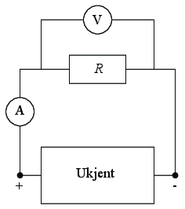
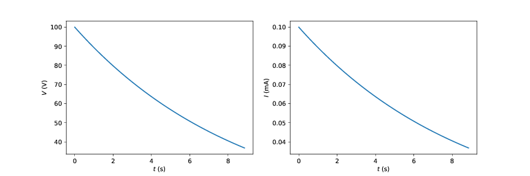

Din venninne Q har funnet opp et nytt batteri. Det er i en koffert som er godt låst. Du kjenner Q og forventer at oppfinnelsen kan ha noen ulemper. La oss studere batteriet. Kofferten har to ledninger som stikker ut, en merket pluss og en merket minus.
a) Hvis du kobler ledningene til en motstand, et amperemeter (som måler strømmen) og et voltmeter (som måler spenning). Skisser hvordan måleoppsettet ditt vil være.

b) Hvordan forventer du at et batteri oppfører seg i det du kan måle på apparatene?
Vi forventer at \( V \) og \( I \) er konstant, at \( V \) er spenningen som batteriet gir.
Når du bruker en motstand på \( R = 100 \, \text{Ohm} \) viser målingene dine at både spenningen og strømmen endrer seg med tiden som vist i denne grafen.

Hmm. Det ser ikke helt slik som vi ønsket oss. Du spør Q hva hun har brukt for å lage dette batteriet.
Kun to tynne metallplater på 1 kvadratmeter som jeg har foldet lurt sammen slik at det kun er 0.1mm mellom hvert fold. Og så har jeg støpt det inn i et materiale med hundre ganger høyere permittivitet enn luften. Genialt, ikke sant?
Joda. Smart. Men stemmer dette?
c) Vi vil lage en modell for strømmen og spenningen ut av det såkalte batteriet ved å anta at det er en kondensator \( C \). Hvordan ser kretsen ut?
d) Vi antar at pluss på boksen svarer til den positive siden av kondensatoren - der hvor det er positiv ladning. Anta at positiv strømretning er fra den positive siden på kondensatoren, gjennom motstanden, og til den negative siden på kondensatoren. Hva er relasjonen mellom \( Q \) og \( I \)?
Når strømmen går ut av kondensatoren, i positiv retning, avtar ladningen slik at \( I = - \d Q/ \d t \).
e) Kall spenningen over kondensatoren for \( V \). Fra \( C = Q/V \) ser vi at spenningen over kondensatoren er \( V = Q/C \). Bruk dette og uttrykket du fant for hvordan \( I \) er relatert til \( Q \), til å vise at $$\frac{\d V}{\d t} = -\frac{I}{C}$$.
f) Vis at Kirchoffs spenningslov gir at \( I = V/R \) og sett dette inn i likningen så du får en differensiallikning for \( V \).
g) Vis at løsningen til denne likningen er \( V(t) = V_0 e^{-t/\tau} \) hvor \( \tau = RC \).
h) Hva er det som bestemmer hvor fort dette såkalte batteriet lades ut?
Det er tidskonstanten \( \tau = RC \).
i) Q sier at systemet effektiv består av to metallplater med areal 1 kvadratmeter i en avstand 0.1 mm i et spesielt materiale. Stemmer dette eller har Q lurt inn flere komponenter i kofferten?
Sjekk hvor lang tid batteriet burde bruke på å lades ut.
Hva kan denne forskjellen skyldes?